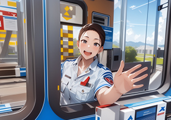
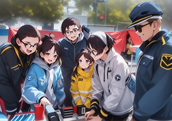
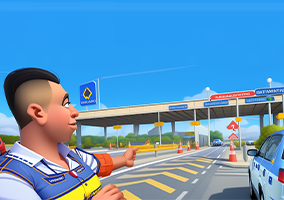
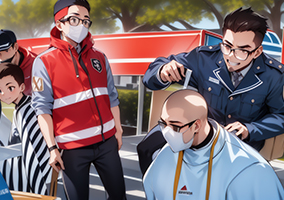

大海中，一滴水珠洋溢
- 
- 
- 

- 
为让志愿服务精神在新时代绽放更加璀璨的光芒，在“五一小长假”来临之际，山临所团支部号召团员青年笃定践行“为人民服务”的志愿服务精神，勇做走在时代前列的奋进者，组织开展了“传承志愿精神 争做时代新人”志愿服务主题活动，此次公益活动为市民提供了从志愿服务精神宣传到“差异化收费政策”咨询解答服务活动，志愿者们用争做文明市民的实际行动，参与创建文明城市的过程；开展“形式多样的志愿服务，深入社区帮助孩子种植多肉，为老人修鞋、理发、维修小家电、贴手机膜、剪指甲到防电信诈谝宣传等便民服务。
每一项的服务志愿者们都热情周到不怕麻烦，以自己最好的能力服务居民，活动传播了“奉献、友爱、互助、进步”的志愿服务精神，以实际行动解民忧、暖民心，让长者切实感受到社区的温暖和良好的社会道德风尚，得到了群众的一致赞许。
青春志愿行 共建“暖心城”
此次志愿活动在空间上向“街头巷尾”延伸、在内容上向“以小见大”拓展，为政府公共服务提供有益补充，将争做雷锋精神的传承者，推动志愿服务成为每个人的一种行动自觉和精神追求，影响带动身边的市民做好事、行善举，激励更多人知行向善，共同建设“美好高速·大美甘州”。
为群众提供旅游路线指引咨询服务
山临所团支部组织青年志愿者开展志愿服务工作。他们热心地向群众提供旅游路线咨询引导、搬运行李等便民服务，并向有需要的游客提供乘车备用药品、饮用水等。青年志愿者还在主要交通路口协助交警开展文明交通劝导志愿服务，劝导车辆、行人遵守规则，文明礼让，为确保“五一”交通畅通有序坚守一线。“志愿者们的热情服务让我感到非常开心，感谢他们的辛勤付出！”一位来张掖丹霞旅游的群众说道。
各团小组开展形式多样志愿服务
为全面贯彻“绿色发展理念”，弘扬“崇尚劳动，热爱劳动”的精神，引导青年志愿者身体力行保护环境。山临所团支部临泽站携手丹霞站志愿者开展了“保护沙河，绿色徒步行”的志愿活动，用行动向群众做出良好的示范，为保护家园的群体中注入青春的力量。
从早上八点始，志愿者们集合于新区健身运动中心，全体志愿者在卡纸上写下自己关于本次绿色环保徒步行之期望、近期的梦想或愿望，投入“追梦箱”，进行预热活动。九时起，志愿者从集合地点出发，沿沙河河堤向南行走，最后在跨河桥楼停靠，并合照留念。途中，志愿者们捡拾被丢弃的垃圾，向路人发放着关于保护大沙河及交通安全的宣传页，并邀请他们写下关于保护环境的标语，投入箱中。徒步之后，大家在“追梦箱”中随机抽取纸条并读出，相互鼓励。
活动，大家深刻体会到了劳动的不易，同时也意识到保护沙河生态的重要。青年是未来环境的主人。顺应历史潮流，要求当代中国青年必须勇敢地承担起环境保护的历史重任。而作为新时代青年的我们，应在弘扬劳动精神的同时，坚持尊重和保护自然，以实际行动为建设美丽中国贡献青春力量。
五一高铁站志愿服务
阳光明媚，春风吹拂，五一小长假已然来临。为打造张掖文旅文明名片，展现山临所青年志愿者的风采，引导青年学生争做新时代文明的践行者和奋斗者。山临所团支部组织青年志愿者积极参加“五一高铁站志愿服务”。
志愿者在接受相关的培训后，顺利投入到了志愿服务中。志愿服务岗位设立在自助售票处、安检口、进站口、候车大厅等多个地点，进行引导咨询、秩序维护、搬运行李等。
后记
活动中大家纷纷表示，将把志愿服务精神有机融入“三抓三促”行动中，融入高速公路运营事业发展有机生命中，融入山临人服务人民群众便利出行和信仰血液中，不断赋予新时代雷锋精神新的内涵。
本次志愿服务将持续五天，以开展节日旅游志愿服务发挥社会志愿服务组织的作用的同时，让人民群众感受到宾至如归的热情和温暖。同时也在五一劳动节来临之际，引导青年志愿者发扬劳模精神，进一步弘扬“奉献、友爱、互助、进步”的志愿服务精神，为塞上古韵、甘州风情添上青春风采。
来源：山临所办公室 时间：2024年4月27日 ©著作权归作者所有,转载或内容合作请联系作者。©网内版权号：